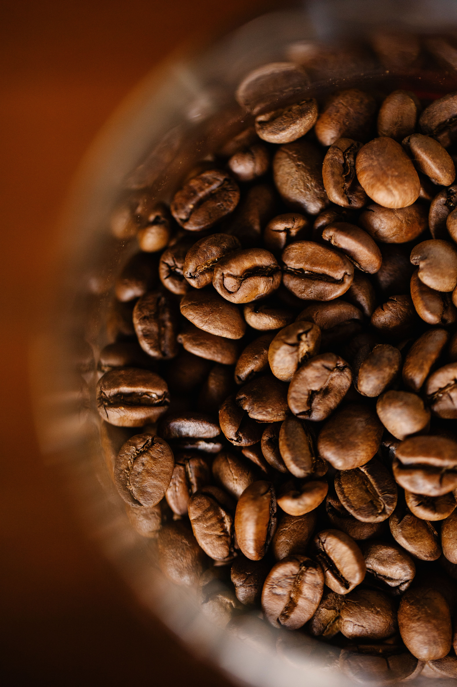

Roasting DynamicsWhat Actually Happens Inside the Bean During Fluid-Bed Roasting?
An exploration of thermodynamic heat transfer, cellular moisture expansion, and how fluid-bed convection prevents contact scorching.
Read Chronicle